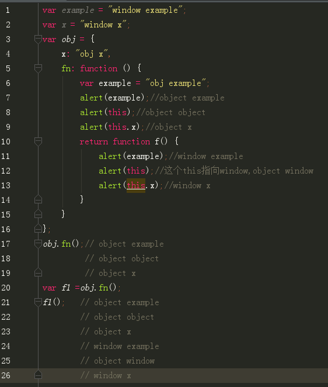

——this指向直接调用它的对象
1.如果函数作为对象的一个属性时，并且作为对象的一个属性被调用时，函数中的this指向该对象。
这种情况下,如果obj.fn()，那么fn这个函数就是直接被obj调用的，它是obj的一个属性（方法）， 它的this就指向obj。
但是，
obj.fn()()
也就是
var f1 =obj.fn();
f1();
是通过调用obj的方法fn的匿名函数。这中间多了一层，就不是直接调用了，这时候this就指向window
注意：找变量的时候是一层一层作用域往上找的，和this不同
个人理解：
由于函数作为对象的一个属性被调用时，函数中的this才指向该对象。
obj.fn()()
本身fn的匿名函数就不是obj的属性，它是obj的属性（方法）fn的匿名函数。 而且如果分开看，obj.fn()赋值给f1，f1在全局中，通过f1调用，也就是f1()， f1是个全局变量，所有在全局作用域中声明的变量、函数都会变成window对象的属性和方法。 那可以写为window.f1 既然在全局中调用，那么，this当然指向window
2.如果函数作为构造函数用，那么其中的this就代表它即将new出来的对象。
function A() {
this.name = '袁佳';
this.age = '1996';
}
var person = new A();
alert(person.name); //袁佳
3.普通函数在调用时，其中的this也都是window。
比如构造函数直接被调用，它的this就指向window
function A() {
this.name = '袁佳';
this.age = '1996';
alert(this);
}
A();//object window
这个构造函数实在全局作用域中声明的，是window对象的方法，相当于window.A()
4.apply和call情况
当一个函数被call和apply调用时，this的值就取传入的对象的值。